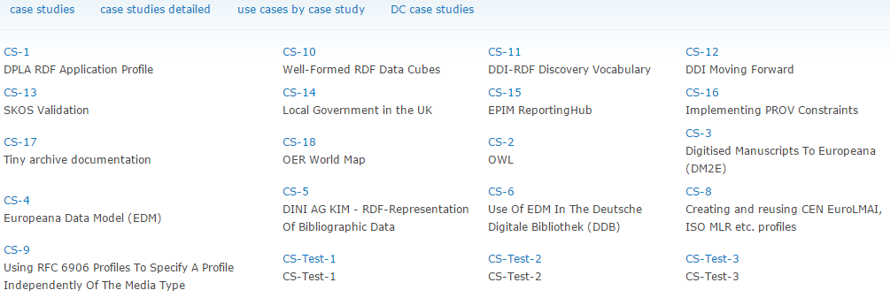

RDF Shapes
Table of Contents
- 1. Motivation
- 2. Domain Modeling Example
- 3. RDF Shapes
- 3.1. Database of Requirements
- 3.2. Database of Requirements: Use Cases
- 3.3. Database of Requirements: Requirements
- 3.4. Database of Requirements: Requirements by Use Case
- 3.5. Database of Requirements: Requirements Coverage by Tools
- 3.6. Evaluation and Logical Underpinning
- 3.7. Evaluation and Logical Underpinning
- 4. ShEx
- 5. SHACL
1. Motivation
- Why RDF Shapes aka Application Profiles are more important than Ontologies
- Shapes as the new Ontologies, SHACL as the new SPIN
1.1. Ontologies
- Everyone uses rdfs:subClassOf, rdfs:subPropertyOf
- Problems start with rdfs:domain, rdfs:range
- OWL classes (especilly Restrictions) are not very useful
RDFS/OWL is made to infer new stuff, not for constraint validation
eg this makes every node having the property be both dbo:Peak and dbo:Volcano:
dbo:firstAscentYear rdfs:domain dbo:Peak, dbo:Volcano
- eg see dbpedia/extraction-framework/issues/287
schema:domainIncludes & schema:rangeIncludes don't have this problem
1.2. OWA vs CWA
Pellet ICV (Integrity Constraint Validation): Validating RDF with OWL
- Interprets OWL ontologies with the Closed World Assumption in order to detect constraint violations in RDF data
- Developed by Clark & Parsia in 2010 as open source. Still continues at https://github.com/Complexible/pellet
- Pellet 3.0 is closed source, part of StarDog
- Kendall Clark 2011: ICV not available any longer. if yr interested in icv, it will be available in the next release of stardog
- Notes at 3kbo
1.3. Ontology Engineering vs Domain Data Modeling
Ontology Engineering:
- Make a new ontology for a new domain
But how often do you work in a brand new domain?
- The spirit of the web is "reuse as much as you can"
- Don't make up your own stuff just because you can:
- Often this is more effort-intensive
- Using a custom ontology will limit reuse of your data
Domain Data Modeling:
- Research & find appropriate ontologies
- Extend if/as needed
- Document how they come together to describe the domain data
2. Domain Modeling Example
atag: (AutoTag): Automotive Video Tagging for Tagasauris
- https://gitlab.ontotext.com/SAS/tagasauris/-/tree/master/data-model (unfortunately this repo is closed)
2.1. Domain Areas
The model covers the following areas:
- Video and Annotation domain:
- Video Metadata
- Video Segmentation including hierarchy (Chapter/Scene/Shot/Frame), time stamps, hash URLs
- Text captions: Subtitles or Automatic Speech Recognition (ASR)
- Text Segmentation and Annotations (applies to title, description, captions)
- Text to Video Synchronization, allowing fusion of text and video annotations
- Video Recognition of images
- Automotive domain:
- Vehicle brands & models
- Tuners
- Events: places (Venues, Circuits), dates, Participants
- Racing: Series (championships), Seasons, Races, Teams, drivers, Ranking (results)
- Shows (expositions, salons)
See Multimedia Annotation notes (google doc)
2.2. Ontologies Reused
- dbo: DBpedia ontology: some classes (eg dbo:Person) and props (eg dbo:productionStartYear, dbo:manufacturer)
- dc, dct: Dublin Core: basic metadata (eg dc:creator, dct:title, dct:issued, dc:format, eg "video/mpeg4")
- dctype: media resource type (eg dctype:MovingImage)
- event: basic Event info
- itsrdf: NER in text: itsrdf:taIdentRef is Named Entity, itsrdf:taIdentClass is type
- ma: W3C Media Annotation (ma:MediaResource, ma:MediaFragment, ma:isFragmentOf…)
- nerd: NE classes (eg nerd:Person, nerd:Phone, nerd:Email)
- nif: NLP Interchange Format: text annotation
- oa: Open Annotation: video annotation
- skos: Simple Knowledge Organization System: defining concepts
2.3. Ontologies Reused
Datasets reused:
- bn: Babelnet: concepts, eg bn:s03473434n "pole position"
- dbr: DBpedia resources (eg dbr:Niki_Lauda, dbo:Honda) and concepts (eg dbr:Mid-size_car, dbr:Luxury_vehicle)
- lscom: concepts often occuring in videos (eg lscom:Commentator_Studio_Expert, lscom:Performing_Art_Activity)
Standard reused:
- mfrag: W3C Media Fragments: not ontology but hash URL schemes to access a certain fragment of a media resource
#t=start,end: temporal#xywh=x,y,width,height: region
- nif: does that for text, reusing RFC 5147:
#char=beg,end
Potentially useful:
2.4. ATAG Ontology
We define a few classes and properties, eg for Video fragmentation:
atag:Shot a owl:Class; rdfs:label "Shot"; rdfs:comment "Continuous footage between two camera edits (change of camera setup)"; rdfs:subClassOf ma:MediaFragment; rdfs:isDefinedBy atag: . atag:Frame a owl:Class; rdfs:label "Frame"; rdfs:comment "Single (or a few) frames from a video. Images are recognized within frames"; rdfs:subClassOf ma:MediaFragment; rdfs:isDefinedBy atag: . atag:hasFragment a owl:ObjectProperty; rdfs:label "hasFragment"; rdfs:comment "Direct (proper) fragment. Used to build up the hierarchy MediaResource>[Chapter]>Scene>Shot>Frame"; # rdfs:domain ma:MediaResource or ma:MediaFragment rdfs:range ma:MediaFragment; rdfs:isDefinedBy atag: . atag:transitiveFragment a owl:TransitiveProperty; rdfs:label "transitiveFragment"; rdfs:comment "Transitive fragment from MediaResource (video) all the way down to Frame"; # rdfs:domain ma:MediaResource or ma:MediaFragment rdfs:range ma:MediaFragment; rdfs:isDefinedBy atag: . atag:hasFragment rdfs:subPropertyOf atag:transitiveFragment.
2.5. ATAG Ontology
And for vehicles, brands etc
atag:VehicleBrand a owl:Class; rdfs:label "VehicleBrand"; rdfs:comment """Manufacturer or brand name for automobiles, motorcycles, trucks, etc; eg Acura"""; rdfs:isDefinedBy atag: . atag:Vehicle a owl:Class; rdfs:label "Vehicle"; rdfs:comment """Specific vehicle model for automobiles, motorcycles, trucks, etc; eg Acura TLX"""; rdfs:isDefinedBy atag: . atag:feature a rdf:Property; rdfs:label "feature"; rdfs:comment """Various characteristics of an object (eg atag:VehicleBrand, atag:VehicleTuner, atag:Vehicle) such as - vehicle type, eg dbr:Automobile, dbr:Motorcycle, dbr:Truck - class, eg dbr:Mid-size_car, dbr:Luxury_vehicle, dbr:Monster_truck - layout, eg dbr:Front-engine_design, dbr:Front-wheel_drive - currency of brand or model: former (dbc:Defunct_motor_vehicle_manufacturers) or current (dbr:Going_concern) - engine, eg dbr:Inline-four_engine, dbr:V6_engine, "V6", "straight-four" """; rdfs:isDefinedBy atag: .
2.6. ATAG Domain Model: Video Metadata
More importantly, we document how things come together to represent data.

2.7. ATAG Domain Model: Video Segmentation
2.8. ATAG Domain Model: Text Annotations
2.9. ATAG Domain Model: Text to Video Synchronization
3. RDF Shapes
Goal: formally describe the shape of RDF data:
- constraint validation
- documentation between data exchange partners
- generating UIs, etc
Precedents:
- DCMI RDF Application Profiles task group
- OSLC Resource Shapes: IBM-led, for exchanging info between requirements management systems, change trackers, issue trackers…
- SPIN (SPARQL Inferencing Notation), 2011-02 W3C Submission by TopQuadrant, RPI, OpenLink
- RDFUnit (AKSW): generates SPARQL tests from OWL, DCAP, OSLC and now SHACL
- Database of Requirements on RDF Constraint Formulation and Validation
W3C Activities:
- RDF Validation Workshop: Cambridge, 2013-09-11
- RDF Data Shapes Working Group: approved 2014-09-26. Initially lots of friction (eg between ShEx and SHACL), now settled on SHACL
3.1. Database of Requirements
Case Studies

Tools

3.2. Database of Requirements: Use Cases
3.3. Database of Requirements: Requirements
3.4. Database of Requirements: Requirements by Use Case

EDM (Europeana Data Model) validation: work topic of Europeana DQC (Data Quality Committee)
3.5. Database of Requirements: Requirements Coverage by Tools

3.6. Evaluation and Logical Underpinning
"RDF Validation Requirements - Evaluation and Logical Underpinning"
- by Thomas Bosch, Andreas Nolle, Erman Acar, Kai Eckert
- (GESIS – Leibniz Institute, Albstadt-Sigmaringen University, University of Mannheim)
- 82.1 Evaluation of Constraint Languages, p71
3.7. Evaluation and Logical Underpinning

"If you can't check it with SPARQL, it doesn't mattter"
4. ShEx
ShapeExpressions: like regexps but for graphs
- http://www.w3.org/Submission/shex-primer/
- Beautifully animated with JS. Visualises how the validation works
- Lets you try things and understand the concepts
- http://shex.io/: resources
- http://www.w3.org/2013/ShEx/Examples/ & http://www.w3.org/2013/ShEx/FancyShExDemo
- devised by Eric Prud’hommeaux (W3C)
- Iovka Boneva (INRIA & CNRS, University of Lille): theoretical proofs on ShEx and SHACL
4.1. ShEx Example
Nice and simple language.
- A person must have one name and mbox, an optional age, and may have
foaf:knowslinks that are also Persons
<PersonShape> { foaf:name xsd:string , foaf:age xsd:integer{0,1} , foaf:mbox IRI , foaf:knows @<PersonShape>* }
5. SHACL
Shapes Constraint Language
- Strongly inspired by SPIN
- Led by TopQuadrant
http://w3c.github.io/data-shapes/shacl/: current draft
5.1. SHACL Example
Complex and verbose
<PersonShape> a sh:Shape ; sh:property [ a sh:PropertyConstraint ; sh:minCount 0 ; sh:predicate foaf:knows] ; sh:property [ a sh:PropertyConstraint ; sh:maxCount 1 ; sh:minCount 1 ; sh:nodeKind sh:IRI ; sh:predicate foaf:mbox] ; sh:property [ a sh:PropertyConstraint ; sh:datatype xsd:integer ; sh:maxCount 1 ; sh:minCount 0 ; sh:predicate foaf:age] ; sh:property [ a sh:PropertyConstraint ; sh:datatype xsd:string ; sh:maxCount 1 ; sh:minCount 1 ; sh:predicate foaf:name] .
5.2. Tools
- http://rdfshape.herokuapp.com/: validation/conversion between languages. Eg previous example